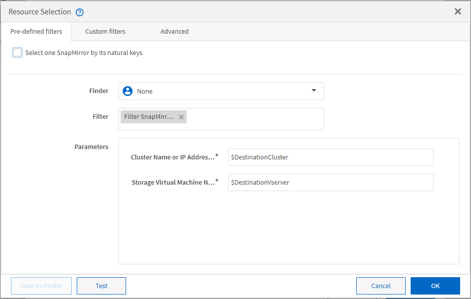

Dokumentationsänderungen beantragen
Dokumentationsänderungen beantragen In GitHub bearbeiten
In GitHub bearbeiten Leitfaden für Beitragende
Leitfaden für BeitragendeFunktionsweise der Ressourcenauswahl
Beitragende
OnCommand Workflow Automation (WFA) verwendet Suchalgorithmen zur Auswahl von Storage-Ressourcen für die Workflow-Ausführung. Sie sollten verstehen, wie die Ressourcenauswahl funktioniert, um Workflows effizient zu gestalten.
WFA wählt Ressourcen zum Wörterbucheintrag aus, z. B. vFiler-Einheiten, Aggregate und Virtual Machines mithilfe von Suchalgorithmen. Die ausgewählten Ressourcen werden dann zur Ausführung des Workflows verwendet. Die WFA Suchalgorithmen sind Teil der WFA Bausteine und enthalten Suchfunktionen und -Filter. Um die erforderlichen Ressourcen zu finden und auszuwählen, durchsuchen die Suchalgorithmen die Daten, die aus verschiedenen Repositorys wie Active IQ Unified Manager, VMware vCenter Server und einer Datenbank zwischengespeichert werden. Standardmäßig ist für jeden Glossareintrag ein Filter verfügbar, um anhand seiner natürlichen Schlüssel eine Ressource zu suchen.
Sie sollten die Kriterien für die Ressourcenauswahl für jeden Befehl in Ihrem Workflow definieren. Darüber hinaus können Sie mit einem Finder die Kriterien für die Ressourcenauswahl in jeder Zeile Ihres Workflows definieren. Wenn Sie beispielsweise ein Volume erstellen, das eine bestimmte Menge an Speicherplatz benötigt, können Sie im Befehl „Create Volume“ den Suchen von Aggregat nach verfügbarer Kapazität`` verwenden. Damit wird ein Aggregat mit einer bestimmten Menge an verfügbarem Speicherplatz ausgewählt und das Volume darauf erstellt.
Sie können einen Satz von Filterregeln für Ressourcen mit Wörterbucheingabentregien definieren, z. B. vFiler-Einheiten, Aggregate und virtuelle Maschinen. Filterregeln können eine oder mehrere Regelgruppen enthalten. Eine Regel besteht aus einem Eingabeattribut für das Wörterbuch, einem Operator und einem Wert. Das Attribut kann auch Attribute seiner Referenzen enthalten. Zum Beispiel können Sie eine Regel für Aggregate wie folgt angeben: Listen Sie alle Aggregate mit Namen, beginnend mit der Zeichenfolge “aggr” und haben mehr als 5 GB verfügbaren Platz. Die erste Regel in der Gruppe ist das Attribut „Name“, mit dem Operator “starts-with” und dem Wert „aggr“. Die zweite Regel für dieselbe Gruppe ist das Attribut „Available_size_mb“ mit dem Operator „>“ und dem Wert „5000“. Sie können eine Reihe von Filterregeln zusammen mit öffentlichen Filtern definieren. Die Option Filterregeln definieren ist deaktiviert, wenn Sie einen Finder ausgewählt haben. Die Option als Finder speichern ist deaktiviert, wenn Sie das Kontrollkästchen Filterregeln definieren aktiviert haben.
Zusätzlich zu den Filtern und Suchfunktionen können Sie mithilfe eines Suchbefehls oder Definieren nach verfügbaren Ressourcen suchen. Der Befehl Suchen oder Definieren ist die bevorzugte Option für die No-op-Befehle. Mit dem Befehl Suchen und Definieren können Sie Ressourcen sowohl des Eintragstyps des zertifizierten Wörterbuchs als auch des Benutzerwörterbuchs definieren. Der Befehl Suchen oder Definieren sucht nach Ressourcen, führt jedoch keine Aktionen für die Ressource durch. Wenn jedoch ein Finder für die Suche nach Ressourcen verwendet wird, wird er im Kontext eines Befehls verwendet, und die durch den Befehl definierten Aktionen werden auf den Ressourcen ausgeführt. Die durch einen Such- oder Definieren-Befehl zurückgegebenen Ressourcen werden als Variablen für die anderen Befehle im Workflow verwendet.
Die folgende Abbildung zeigt, dass ein Filter für die Ressourcenauswahl verwendet wird:

Beispiele für die Ressourcenauswahl in vordefinierten Workflows
Sie können die Befehlsdetails der folgenden vordefinierten Workflows im Designer öffnen, um zu verstehen, wie Ressourcenauswahloptionen verwendet werden:
-
Erstellen eines Clustered Data ONTAP-NFS-Volumes
-
Cluster-Peering Einrichten
-
Entfernen eines Clustered Data ONTAP Volumes